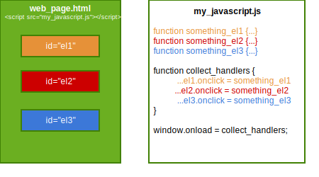
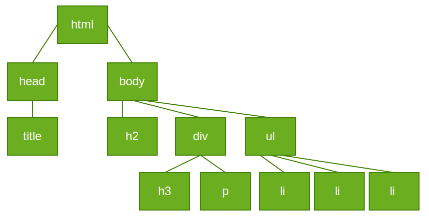

TI1505: JavaScript II
Claudia Hauff
Today: more about objects & the DOM
The lecture today covers chapter 9 of the book Web Programming Step by Step, 2nd Edition. The book's lecture slides for this chapter are available here (we follow them pretty closely).
JavaScript tidbits
noscript
- Not everyone has JavaScript enabled
noscripttag is used to offer alternative content- Good practice to have such a warning
<noscript>
<p>
Warning: this page should be viewed with
JavaScript enabled
</p>
</noscript>
- Firefox: go to about:config
- Search for javascript.enabled and toggle.
- Example of
noscript's effect.
Logical operators
||and&&behave as in Java, if their operands have Boolean values- Non-Boolean
||: returns left operand if it can be converted to true - Non-Boolean
&&: returns left operand if it can be converted to false - Default values can be implemented this way
OO for JavaScript
OO for JavaScript
- Small programs often don't need it
- JavaScript has functions as first-class citizens
- Large projects benefit from OO
- OO groups related data and behavior
- Built-in objects: Strings, arrays, HTML/DOM nodes
Objects
new Object()produces an empty Object, ready to receive name/value pairs- Name can be any string, value anything but
undefined - Member are accessed through
.nameor[name] - Unifies Object and Hashtable
Anonymous objects
var pt = {
x: 10,
y: 20
};
alert(pt.x +", " + pt.y + ", type: " + typeof(this);
Adding a method
var pt = {
x: 10,
y: 20,
sum: function() {return this.x+this.y;}
};
alert(pt.x +", " + pt.y + ", type: " + typeof(this) +", sum="+pt.sum();
Simulating a constructor through a function
function Point(xVal, yVal)
{
this.x = xVal;
this.y = yVal;
this.sum = function() { return this.x+this.y;}; //function in a function!
}
var p = new Point(10,20);
- An object constructor is just a normal function
- What does JS do with
new?- new anonymous empty object is created and used as
this - returns new object at the end of the function
- new anonymous empty object is created and used as
Objects
var p2d = new Point(10,20);
p2d.sum(); /* 30 */
var p3d = new Point(10,20);
p3d.z = 15; /* new members can be added on the fly */
p3d.sum(); /* 30 */
p3d.sum=function(){return this.x+this.y+this.z;};
p3d.sum(); /* 60 */
- New variables and methods can be added on the fly
- Objects have a secret pointer to another object: the object's prototype
- JavaScript does prototype chaining
Want to know more?
Listen to Douglas Crockford
PlayList on YouTube(if you have a few hours, I highly recommend it)
Global DOM Objects
Global DOM objects
document: current web pagehistorylocation(URL of the current page)navigator(the Web browser you are using)screenwindow: entire browser window
Methods of the windows object
alert, confirm, promptsetInterval, setTimeout, clearInterval, clearTimeoutopen, close, printblur, focusmoveBy, moveTo, resizeBy, resizeTo, scrollBy, scrollTo
Interesting properties & methods
document.referrer: URL of the document viewed before this onedocument.cookie: all cookies of this pagedocument.bodynavigator.cookieEnabledhistory.length, history.back(), history.forward(), history.go(index)location.hostname, location.protocol, location.search
Separating HTML, CSS and JavaScript
- So far: either inline JavaScript or
*.jswith explicit connection between event and JavaScript function (obstrusive JavaScript) - A program change can require fixing code in various places
- Goal: HTML with as little as JavaScript as possible (unobstrusive JavaScript)
- How? DOM is used to attach and execute JavaScript functions
Examples of obstrusive JavaScript
+ =
<input type="text" id="n1"> + <input type="text" id="n2">
= <span id="res"></span>
<button onclick="
{
var n1 = document.getElementById('n1').value;
var n2 = document.getElementById('n2').value;
var res = parseInt(n1) + parseInt(n2);
document.getElementById('res').innerHTML=res;
}
">Calculate</button>
Somewhat less obstrusive ...
<script src="some_functions.js"></script>
<input type="text" id="n1"> + <input type="text" id="n2">
= <span id="res"></span>
<button onclick="compute()">Calculate</button>
function sumOfTwoNumbers() {
....
}
Defining event functions in JavaScript
<input type="text" id="n1"> + <input type="text" id="n2">
= <span id="res"></span>
<button id="computeButton">Calculate</button>
and the JavaScript code ...
/* in general
element.event = function
*/
//specific
document.getElementById("computeButton").onclick = sumOfTwoNumbers;
function sumOfTwoNumbers() {
....
}
Where to put the line of JavaScript?
<head>
<script src="some_functions.js" type="text/javascript">
</script>
</head>
<body>
...
<button id="computeButton">...
</body>
- Web page parsed/executed as elements are encountered
- JS code: variables are declared immediately & functions are declared but not called
- At
</head>, the structure of<body>is unknown (DOM objects have not been created yet) - Error:
document.getElementById(...) is null
Solution 1
- Move the call to the JavaScript
*.jsfile just before</body> - JavaScript is executed once the page has loaded (all DOM objects exist)
- Commonly used in practice, not the optimal solution though
Solution 2: window.onload (recommended)
// collect global statements
function functionName() {
element.event = functionName;
element.event = functionName;
...
}
window.onload = functionName; // run once the page is loaded
window.onloadevent occurs once a page has been fully loaded (all DOM objects exist)- Attach all other handlers to this event
All together: unobstrusive JavaScript
Common errors
/* wrong:
window.onload = collect_handlers(); //function brackets
window.onLoad = collect_handlers; //uppercase
*/
window.onload = collect_handlers;
- What happens if the event handler is wrongly attached?
- JSLint catches such mistakes.
onload not the only window event
- onerror
- onresize
- onunload
Anonymous functions
- It is not strictly necessary to give names to functions
- Function without a name can be stored as variable, attached as event handler, etc.
- In general: an anonymous function is immediately assigned/passed
/* instead of writing */
function functionName() {
element.event = functionName;
element.event = functionName;
...
}
window.onload = functionName; // run once the page is loaded
/* we can also write */
window.onload = function() {
function functionName() {
element.event = functionName;
element.event = functionName;
...
}};
Module pattern
- Problem: larger projects include many JavaScript libraries
- All JavaScript code enters the same namespace
- JavaScript has limited scoping
varin function: local, limited scopevaroutside of a function: global scope- no
var: global scope (holds for function names too)
var i = 12; /* global scope */
j = 17; /* global scope */
function summedPower() { /* function name has global scope */
var res = i + j; /* variable has local scope */
return res*res;
}
i and j as well?Module pattern
- Goal: do not declare any global variables or functions unless required
- Idea: enclose entire script in a function (functions have their own scopes)
function wrapper() { /* function name has global scope */
var i = 12;
var j = 17;
function summedPower() {
var res = i + j;
return res*res;
}
}
wrapper(); /* call function */
Module pattern
- We can also get rid of the last global symbol
- Idea: use an anonymous function
- Todo: wrap code into an anonymous function & call the function
(function() {
var i = 12;
var j = 17;
function summedPower() {
var res = i + j;
return res*res;
}
})();
/* general template for module pattern */
(function() {
statements;
})();
this: the current object
- Event handlers are bound to the attached element's objects
- Handler function "knows" which element it is listening to (
this) - Simplifies programming, one function can serve different objects
/* one function per button (highly redundant) */
window.onload = function() {
document.getElementById("button10").onclick = computeTimes10;
document.getElementById("button23").onclick = computeTimes23;
document.getElementById("button76").onclick = computeTimes76;
}
/* would not work: event handlers cannot have parameters */
window.onload = function() {
document.getElementById("button10").onclick = computeTimes(10);
...
}
this: the current object
- Event handlers are bound to the attached element's objects
- Handler function "knows" which element it is listening to (
this) - Simplifies programming, one function can serve different objects
/* best option: exploit the this keyword */
window.onload = function() {
document.getElementById("button10").onclick = computeTimes;
document.getElementById("button23").onclick = computeTimes;
document.getElementById("button76").onclick = computeTimes;
}
function computeTimes() {
var times = parseInt(this.innerHTML);
var input = parseFloat(document.getElementById("input"));
var res = times * input;
alert('The result is '+res);
}
this: the current object
- In global code or regular functions (not bound to an object),
thisrefers to the globalwindowobject - Event handler sharing only works with the unobstrusive attachment strategy
- Simplifies programming, one function can serve different objects
Traversing the DOM tree
Reminder: the DOM tree
This tree can be traversed programmatically.
Reminder: the DOM tree
- Each page element is an object
- A DOM node (or DOM object) has references to
- its parent
- its siblings
- its children
- All objects are connected to each other in a tree-like structure
Why do we care?
- Intricate DOM manipulations make games, visualizations possible
- Puzzle pieces expressed as
divs, randomly exchange them after button click - Mouse cursor game: cursor must not touch maze walls - turn them red otherwise
Three Types of DOM nodes
<p id="foo">This is a paragraph of text with a
<a href="http://www.google.com/">link</a>.
</p>

Source: Web Programming Step by Step
- Element nodes: HTML tags (have children and/or attributes)
- Text nodes: inline text inside a block element (no children or attributes)
- Attribute nodes: attribute name/value pair inside an element's opening tag; cannot have children or attributes
DOM object properties
| name | description |
|---|---|
| firstChild, lastChild | start/end of this node's list of children |
| childNodes | array of all this node's children |
| nextSibling, previousSibling | neighboring nodes with the same parent |
| parentNode | the element that contains this node |
Example
<p id="foo">This is a paragraph of text with a
<a href="http://www.google.com">link</a>.
</p>

Source: Web Programming Step by Step
//para is a reference to node <p>
para.firstChild.nextSibling.firstChild.textContent = "Google link"
Walking the DOM tree directly is error-prone
<div>
<p>
This is a paragraph of text with a
<a href="page.html">link</a>.
</p>
</div>
How many children does <div> have?
var myDiv = document.getElementsByTagName("div")[0];
myDiv.childNodes;
myDiv.childElementCount;
Walking the DOM tree directly is error-prone
<div>
<p>
This is a paragraph of text with a
<a href="page.html">link</a>.
</p>
</div>
How many children does <div> have?
div has three children:
- Text node:
\n\t - Element node:
<p> - Text node:
\n
Selecting groups of DOM elements
We are mostly interested in the elements, lets ignore the text nodes.
document.getElementsByTagNamedocument.getElementsByNamedocument.querySelectorHTML5document.querySelectorAllHTML5
Test on dom.html (WebConsole, Inspector).
Example: highlighting
Goal: a searchable page, which highlights paragraphs that contain terms of interest to the user
document.querySelector(All)HTML5
Returned is the first (or all) element(s) that that match the provided CSS selector string.
var lis = document.querySelectorAll("li");
for (var i = 0; i < lis.length; i++) {
lis[i].style.backgroundColor = "orange";
}
/* selectors can be more complex, just like CSS */
var pInDiv = document.querySelectorAll("div #id_p");
for (var i = 0; i < pInDiv.length; i++) {
pInDiv[i].style.backgroundColor = "red";
}
/* or ... (remember: # is an id, . a class)*/
var paragraphs = document.querySelectorAll("div#news p.announcement");
Creating new nodes
HTML tags and content can also be added dynamically. Two-step procedure:
- Create a DOM node
- New node is added to the page as child of an existing node
- document.createElement("tag")
- document.createTextNode("text")
// adding another li element
var newLI = document.createElement("li");
newLI.innerHTML = "Another list element";
newLI.style.color = "orange";
Inserting nodes into the DOM tree
Every DOM element object has these methods
| name | description |
|---|---|
| appendChild(node) | places given node at end of this node's child list |
| insertBefore(new, old) | places the given new node in this node's child list just before old child |
| removeChild(node) | removes given node from this node's child list |
| replaceChild(new, old) | replaces given child with new node |
Inserting nodes into the DOM tree
- A list element
<button onclick="
var ul = document.getElementById('ul_domtree');
var il = document.createElement('li');
il.innerHTML = 'List element ' + (ul.childElementCount+1) +' ';
ul.appendChild(il);
">Add list element</button>
Removing nodes into the DOM tree
- List element 1
- List element 2
- List element 3
- List element 4
- List element 5
- List element 6
- List element 7
<button class="pure-button pure-button-warning" onclick="
var ul = document.getElementById('ul_domtree2');
ul.removeChild(ul.lastChild);
">Remove last element</button>
<button class="pure-button pure-button-secondary" onclick="
var ul = document.getElementById('ul_domtree2');
ul.removeChild(ul.firstChild);
">Remove first element</button>
Misuse of innerHTML
- HTML elements can also be added via
innerHTML
var div = document.getElementById("some_div");
div.innerHTML += "Link to Google";
createElement, appendChildUnobtrusive styling
- So far
- separation between content and code
- Hardcoding of CSS style properties in JavaScript
- Now: separation between JavaScript code and styling/presentation
- Ideally: presentation change should require changes in CSS files only
- Good JavaScript code contains little to none CSS
Unobtrusive styling: How-To
- JavaScript modifies classes and/or ids on elements
- Appearance of classes/ids defined in CSS files
/* CSS style for clicked buttons in *.css */
.clickedButton {
color: orange;
background-color:white;
}
// JavaScript to change the style at button click
function buttonClick() {
this.className = "clickedButton";
}
Unobtrusive styling: What about multiple classes?
classNameproperty overwrites pre-existing class- Use
classListHTML5: DOM property, which represents all classes on the element
var buttons = document.getElementByTagName("button");
var button1 = buttons[0];
button1.classList.toString(); //"pure-button pure-button-primary"
button1.classList.add("pure-button-secondary");
button1.classList.toString(); //"pure-button pure-button-primary pure-button-secondary"